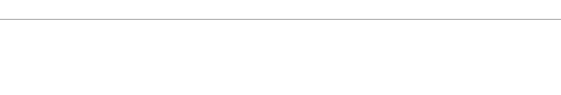

INFORMACIÓN sobre PARANORMALIA
Hola amigos, este día tenía que llegar.
La WEB y el BLOG desaparecen. Desde hace tiempo, se hacía muy difícil añadir contenidos nuevos y solo hemos mantenido los programas de radio que ya conocéis. No ha sido una decisión fácil, pero todo principio tiene su fin.
Han sido 20 años en los que hemos intentado aportar nuestro granito de arena al mundo del misterio, pero la falta de visitas y de contenidos nuevos, ha propiciado que hagamos un alto en el camino y dejemos descansar este proyecto. En este momento no tiene mucho sentido seguir.

Los programas de "Voces del Misterio" estarán disponibles en la plataforma iVoox y en esta web y los programas de "La Rosa de los Vientos" solo estarán disponibles en Internet Archive.
Además seguimos estando en las redes sociales y , en nuestras URLs (paranormaliaweb.github.io o paranormalia.webcindario.com) y también a través de nuestro email: paranormaliaweb@gmail.com.
Un abrazo.